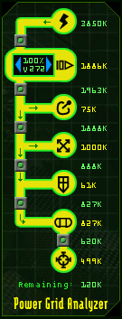

Ship ConfigurationWelcome back Pilot. This is Solder Ronin speaking, sectional leader of the TRI Department for Novice Pilot Affairs. I hear you're having trouble configuring your ship, and it is my duty to help you to be all you can be. Let's get started, I've got a transport full of recruits coming in within the hour... The following report will teach you the basics of configuring your ship. Keep in mind: this is an interface explanation only, and you will not be given hints and tips regarding specific customizations. |
| Ship Purchase Dialogue |
|
The ship purchase section of the ship configuration screen can only be accessed from your faction's stations. To view a ship's statistics you will first need to select a ship using the left and right scroll arrows. Once you have selected a ship click the 'info/purchase' button. The information and purchase pop-up will provide you with further statistical information on the selected ship. |
| System Selection Menu |
|
The system selection menu is a green, arced list of systems located to the left of the graphic representing your current ship. When a system is selected via this menu, the equipment assignment slots will change accordingly. |
| Graphical Ship Layout |
|
In this portion of the ship configuration screen you will see a top down view of your current craft. Depending on which system you have selected you will see various icons displaying where each component resides on your ship. |
| Equipment Assignment Slots | ||||||||||
|
The ship configurator contains eight equipment assignment slots, located directly in the center of the screen. This is the most vital portion of the ship configurator. From here you will input all equipping orders for your ship. Each equipment assignment slot contains four basic components: the standard item image and icon , inventory scroll arrows , size indication boxes , and an equip status button .
Inventory Scroll Arrows - These blue scrolling arrows, when clicked, will scroll through every item in your inventory that corresponds with the slot's type. (i.e. shields, missiles, engines, etc.) Size Indication Boxes - Size boxes are also a standard throughout the interface. In the ship configurator you will notice three different size boxes: open green, solid green, and solid red. An open green box means that you have an open size slot. A solid green box means that the current piece of equipment is taking up that size box. (Note: you may see a mixture of green boxes in a slot. for instance: if you can fit a size three engine, but have a size two engine equipped, you will see two solid green boxes and one open green box.) The final box type, solid red, indicates that an item is too big for your ship. Equip Status Button - The equip icon will only display if an item will fit on your ship. A blue arrow pointing towards the ship diagram indicates that the item is in inventory, and can be equipped on your ship. Once you have clicked on the blue icon, the item will be equipped on your ship. A red icon with an arrow pointing away from the ship indicates that the selected item is already equipped, and can be unequipped and added to inventory.
|
| PGA (Power Grid Analyzer) |
|
 The power grid analyzer will allow you to compare the performance of different components that are equipped on your ship. You will notice that the PGA flows from top to bottom, and that certain components are required to power lower level systems. On the PGA, an item that is equipped will be outlined in green. if an item is powered, it will be filled with yellow. Inside of the engine component you will notice a set of arrows and 2 statistics. The first statistic is a throttle percentage. The second Statistic is your maximum velocity. (Note: This is for power consumption analysis only, and does not effect your in-flight throttle settings.) To the right of the PGA you will notice several numbers. These numbers display your current power based on the maximum amount of power drain caused by each component. The number directly to the left of each system is the amount of power required to run the system at it's full potential. The number between each item is the running total (remaining power). |